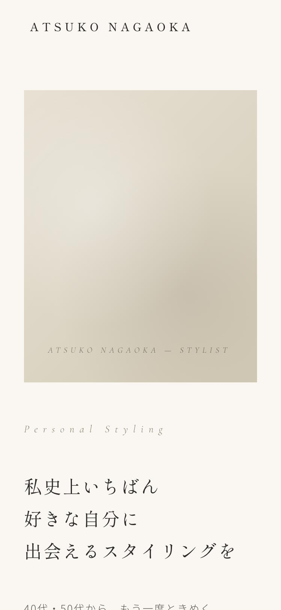
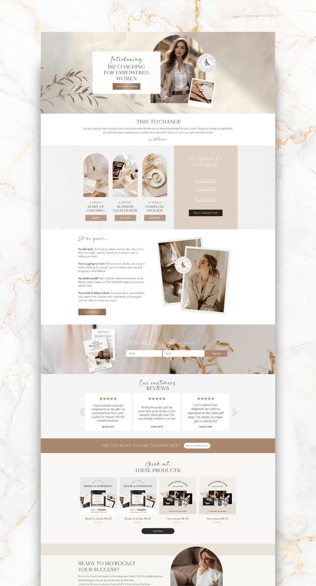
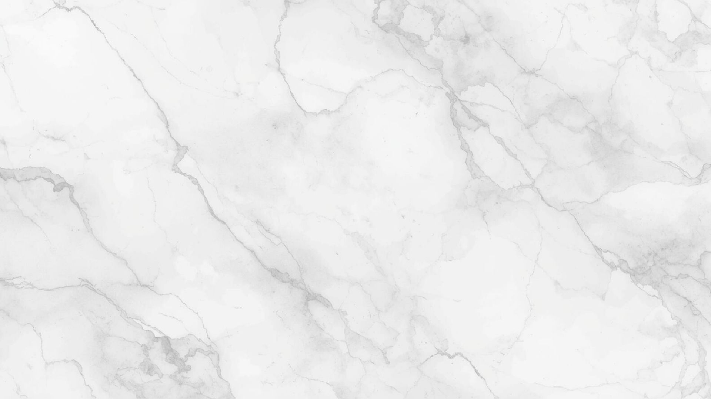
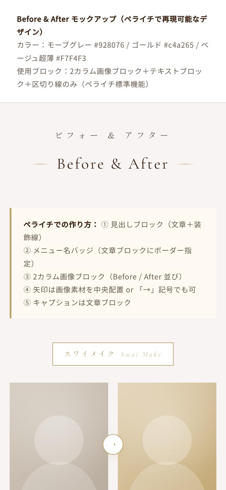
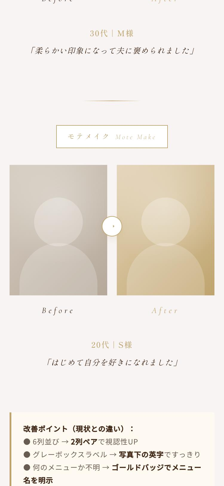
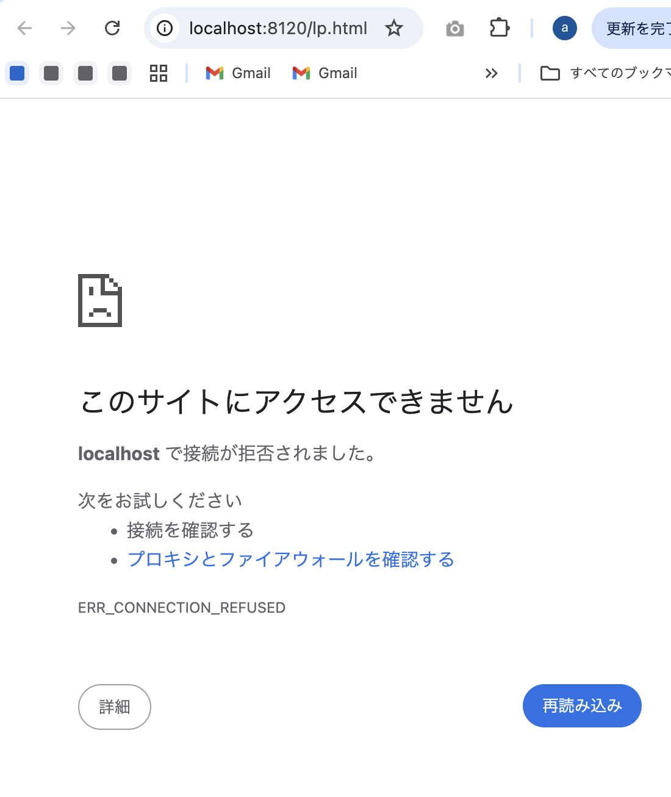

PROJECT WALKTHROUGH
篤子さんLP制作の全工程
— 制作開始から公開URL発行までのすべて —
クライアント：長岡篤子さま（パーソナルスタイリスト・40〜50代女性向け）。
本ドキュメントは制作中の判断・つまずき・解決策をすべて時系列で記録したものです。
制作期間：2026/04/27（同日内）
納品形式：GitHub Pages
使用ツール：Claude Code / GitHub / gh CLI
STEP 01
— PROJECT START —
クライアントフォルダの作成
あや
こちら、新しく「クライアント」というフォルダの中にお名前を入れて、フォルダを作っておいてください。
やったこと
- 「クライアント／篤子さん」フォルダを作成
- 制作物の置き場として運用開始
$ mkdir -p "/Users/ayaka/ai_camp_cc/クライアント/篤子さん"
STEP 02
LP原稿（テキスト）受領
あや
LP文章 叩き台（セクション別）
【ヒーロー】私史上いちばん好きな自分に出会えるスタイリングを
【共感】クローゼットは満たされているのに、心は満たされない。
【未来】こんなあなたへ／【サービス】ショッピング同行 ¥27,000〜
【プロフィール】長岡篤子（ながおか あつこ）
……（全セクション原稿）
やったこと
- 原稿を全セクションでHTML構成に落とし込み
- ヒーロー／共感／未来／導線／サービス／プロフィール／声／FAQ／CTA／フッター の構成で固める
STEP 03
v1：CELINE/STORY風の初稿LPを構築
あや
HTMLでLPを作る（STORY/CELINE風デザイン）
やったこと
- カラー：ベージュ#FAF7F2／ダーク#2B2A27／アクセント#8B7E6A
- 明朝＋セリフ（Shippori Mincho／Cormorant Garamond）でSTORY誌の落ち着き感
- IntersectionObserverでフェードイン。スマホ縦並び対応
- ローカルサーバー（port 8120）で初稿プレビュー

v1初稿のプレビュー（CELINE/STORY風・落ち着いたベージュトーン）
STEP 04
大理石ラグジュアリー版への方向転換依頼
あや
こちらのようなベージュやゴールドなど、落ち着いたカラーを基盤として、大理石のような素材を入れ込んでほしいです。所々にゴールドなどのあしらいを使い、高級感と40-50代の女性に受け入れていただけるような美しいサイトにしてください。今、写真が入るところがとても少ないので、スタイリストらしい写真を散りばめるセクションをもうちょっと増やしてください。

あやが添付した参考画像（マーブル＋ゴールドのラグジュアリーな世界観）
STEP 05
v2：マーブル＋ゴールドの高級版を構築
やったこと
- CSSラジアルグラデ＋SVGノイズで大理石風テクスチャを再現
- ゴールド罫線・装飾シンボル・モノグラム的バッジを追加
- 写真枠（ポラロイド風／縦長／円形クロップ）を増設

v2マーブル＋ゴールド版（このあと不採用となります）
PIVOT 06
「v2は好みではない、v1に戻して」
あや
こちらのデザインはあんまり好みではないので、1個目のものに戻してください。こちらはもう使いません。
判断ポイント：「方向性が違う」と判明した時点で迷わずv1へロールバック。CSSの装飾や追加セクションは捨て、初稿の構成だけを残しました。
やったこと
- lp.html をv1（CELINE/STORY風）に書き戻し
- マーブル装飾・ゴールド罫線・追加写真枠は全て削除
STEP 07
bd.jpg（実物大理石画像）をFV背景に統合
あや
あつこさんのフォルダ内に「BD」というJPEGの大理石の背景画像を入れました。これをファーストビューの背景として設定してください。
やったこと
- v1の構成を維持したまま、ヒーローの背景に bd.jpg を敷く
- テキストの可読性を担保するため、白の半透明グラデーションをオーバーレイ
.hero {
background-image: url('bd.jpg');
background-size: cover;
background-position: center;
}
.hero::before {
content: '';
position: absolute;
inset: 0;
background: linear-gradient(135deg,
rgba(250, 247, 242, 0.55) 0%,
rgba(250, 247, 242, 0.35) 100%);
}

FV背景に実物の大理石画像（bd.jpg）が入った状態
STEP 08
people.png（女性シルエット）をビジュアル枠に統合
あや
して、写真を入れるところに、フォルダー内のPeopleという画像を入れ込んでください。
やったこと
- 透過PNG（people.png）をヒーローのビジュアル枠＋プロフィールセクションに配置
- 背景色をベージュトーンに合わせ、シルエットが浮かないよう調整
.hero-visual {
background-color: #E8E1D3;
background-image: url('people.png'),
linear-gradient(135deg, #E8E1D3 0%, #D4C9B3 100%);
background-size: 110% auto, cover;
background-position: center bottom, center;
}

people.png（透過シルエット）が入った最終状態
ERROR 09
完成URL要請 → サーバー停止エラー
あや
篤子さんの決まったLPのリンク教えて
ローカルプレビュー（http://localhost:8120/）のURLを共有しようとしたところ、画面側で接続エラーが発生：

あやから共有された画面：ERR_CONNECTION_REFUSED
原因：ローカルのPython http.serverプロセスが落ちていた（セッションが長くなるとMCPプレビューサーバーは停止することがある）。
STEP 10
プレビューサーバーを再起動
やったこと
- MCPの
preview_start で「atsuko-lp」を再起動
- 新しいserverIdを発行・port 8120でローカル復活
# MCP Claude_Preview経由
preview_start({ name: "atsuko-lp" })
→ serverId: 27f1c2c1-72ea-46dd-a4f3-967a060326fe
→ http://localhost:8120/lp.html
STEP 11
「篤子さんがモデリングしたい」共有方法を検討
あや
篤子さんがこれをモデリングして作りたいみたいなのだけど、何をお渡しすれば良いかな？おそらく篤子さんはブラウザなのでフォルダとかの共有がよくわからん
提示した3案
- A：GitHub Pagesで公開 → URL共有（ブラウザだけで完結）
- B：ZIPで素材一式を渡す（解凍 → ダブルクリック）
- C：Vercelデプロイ＋ギガファイル便で素材送付
あや
aを作って
CRITICAL 12
GitHub Pages公開：誤ってlp.htmlを削除
意図していた作業
- lp.html → index.html にリネーム（GitHub Pagesは index.html を自動配信するため）
# 実行してしまったコマンド列（問題あり）
mv lp.html index.html.bak
cp index.html.bak index.html
# …別作業を挟んだあと…
rm -f index.html.bak index.html ← lp.htmlの実体を消失
git mv lp.html index.html ← fatal: bad source, source=lp.html
何が起きたか：「mv → cp → rm」の流れで、本体ファイル（lp.html）の実体ごと削除してしまった。次の git mv が「lp.htmlが存在しない」というエラーで失敗。
教訓：リネームは git mv lp.html index.html 一発で済む。中間ファイル（.bak）は作らない。バックアップを取りたい場合も cp でなく git mv 後にcommitしてHEADから戻せる状態にする。
RECOVERY 13
git checkoutで復旧
復旧手順
- 幸い直前に
git init と最初のcommit（hash: 6a2fb4b）を済ませていた
git checkout lp.html でHEADから実体を復元- 3点（lp.html / bd.jpg / people.png）が揃っていることを確認
$ git checkout lp.html
Updated 1 path from the index
$ ls
bd.jpg lp.html people.png
救われた理由：事前に git init → 初回コミットを済ませていたため、ワーキングディレクトリで消えてもインデックスに実体が残っていた。「とりあえずgit init＋初回commit」は最強のセーフティネット。
STEP 14
index.htmlへリネーム → リモート作成 → push
$ git mv lp.html index.html
$ git commit -m "Rename to index.html for GitHub Pages"
[main 86da98e] Rename to index.html for GitHub Pages
$ gh repo create gokigen-design/atsuko-nagaoka-lp --public --source=. --push
https://github.com/gokigen-design/atsuko-nagaoka-lp
[new branch] HEAD -> main
ポイント
- 所属org：gokigen-design（あやの公開用GitHub組織）
- リポジトリ名：atsuko-nagaoka-lp（クライアント名のローマ字）
- 1コマンドでリモート作成＋pushまで完了
DONE 15
GitHub Pages有効化・公開URL発行
$ gh api -X POST /repos/gokigen-design/atsuko-nagaoka-lp/pages \
-f "source[branch]=main" -f "source[path]=/"
{
"html_url": "https://gokigen-design.github.io/atsuko-nagaoka-lp/",
"build_type": "legacy",
"https_enforced": true
}
反映時間：初回ビルドは1〜2分。以降は git push するたびに自動デプロイ。
チームに共有したい教訓
- 方向性のピボットは早く・きれいに：v2が刺さらなかった時点で即v1ロールバック。装飾は思い切って捨てる。
- 素材は段階的に統合する：まず構成→次に背景画像（bd.jpg）→次に人物画像（people.png）の順。一気に入れると問題切り分けができない。
- 「git initと最初のcommit」を最初に済ませる：これが今回の救命綱だった。誤削除してもHEADから戻せる。
- リネームは
git mv 一発：mv→cp→rmの中間ファイル運用は事故のもと。
- クライアントがブラウザ派なら GitHub Pages URL がベスト：ZIP配布より「URLだけ」の方が誤操作・解凍ミスが起きない。
- ローカルプレビューは落ちる前提で：セッションが長くなるとサーバーが停止する。エラー画面が来たら即
preview_start で再起動。